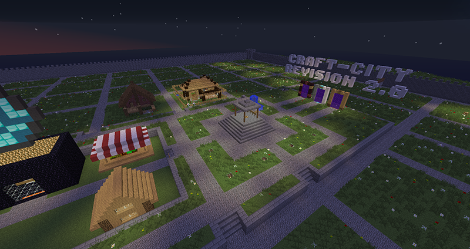

Survival: Build Island
The main build island is the default world in Survival. It is home to Craft City and is the intended area to build. Protection Stones can be used outside of the city to protect areas you may build in. Within the city is a number of plots that are rented out in 7 Day chunks, which are perfect for builds you want to show off.
